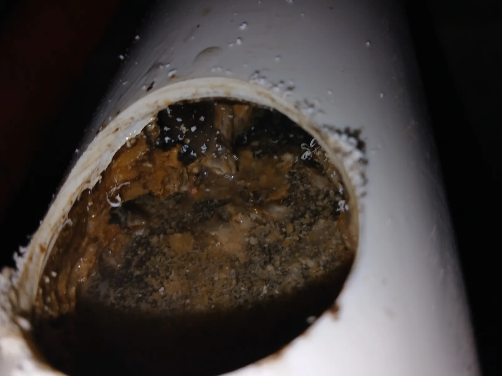

송파구 가락동 하수구막힘, 현장 도착 후 진단
송파구 가락동 대단지아파트 어린이집 현장에 도착해 하수구의 배수 상태를 점검했습니다. 배관 입구를 확인해보니 내부가 오물과 슬러지로 꽉 차 있어 물이 흐를 수 있는 공간이 거의 남지 않은 심각한 하수구막힘 상태였습니다.
일반적인 아파트 배관 구조와 달리 어린이집에서 사용하는 배수관이 바닥 아래에 단독으로 설치돼 있었습니다. 내부에서는 직접 작업할 수 있는 구간을 확보하기 어려워 배관이 지나가는 반지하 설비공간으로 진입해야 했습니다.
해당 공간은 천장이 매우 낮고 움직일 수 있는 범위도 좁아 장비 이동과 작업 자세 확보가 쉽지 않았습니다. 여러 작업자가 장비와 샤프트를 나누어 전달하며 안전하게 작업을 진행했습니다.
1단계: 증상 확인과 필요한 장비 작업
낮은 반지하 공간으로 진입해 어린이집 단독 배수관의 연결부와 작업 가능한 진입 지점을 확인했습니다. 좁은 공간에서 배관을 손상하지 않도록 장비 위치와 샤프트 진입 각도를 세밀하게 조정했습니다.
배관 내부에는 다량의 오물과 침전물이 쌓여 있어 단순 관통만으로는 충분한 통수 공간을 확보하기 어려운 상태였습니다. 따라서 배관 벽면에 붙은 슬러지까지 제거할 수 있도록 리지드 K9-204 플렉스샤프트를 사용해 배관스케일링 작업을 진행했습니다.

2단계: 원인 구간 처리와 정상 작동 확인
리지드 샤프트를 배관 안쪽으로 조금씩 진입시키며 굳은 막힘 물질을 분쇄했습니다. 샤프트를 반복적으로 전진과 후진시키면서 배관 내부의 오물과 침전물을 제거하고 배수 통로를 넓혔습니다.
작업 공간이 낮고 협소해 작업자 모두가 상당한 어려움을 겪었지만, 배관 구간을 끝까지 세밀하게 작업했습니다. 이후 충분한 물을 흘려보내 어린이집 하수구에서 배수가 원활하게 이루어지는지 최종 확인했습니다.

작업 결과와 재발 방지 안내
배관 내부를 가득 막고 있던 오물과 슬러지를 리지드 K9-204 샤프트로 제거하면서 단독 배수관의 통수 기능이 정상적으로 회복됐습니다. 어린이집과 같이 하수구 사용량이 많은 시설은 음식물 찌꺼기와 각종 오염물이 빠르게 축적될 수 있습니다.
특히 바닥 아래에 단독 배관이 설치된 구조는 막힘 발생 시 접근과 작업이 어려우므로 배수가 느려지는 초기 단계에서 점검하는 것이 중요합니다. 신라건축설비는 복잡한 배관 구조와 협소한 작업 환경에서도 현장에 적합한 전문 장비를 사용해 늘 당신 곁에서 정확하게 해결해드리겠습니다.
최종 조치: 어린이집 바닥 아래의 낮은 반지하 설비공간으로 직접 진입해 단독 배수관의 위치와 진행 방향을 확인했습니다. 리지드 K9-204 플렉스샤프트를 배관 내부로 투입해 막힘 물질과 침전물을 분쇄·제거하고 정상적인 배수 흐름을 복원했습니다.
현장 방문 전 확인하는 비용과 작업 범위
신라건축설비는 현장 증상과 배관 구조를 확인한 뒤 필요한 작업과 예상 비용을 안내합니다. 단순 관통으로 해결되는지, 배관내시경·석션·고압세척 또는 추가 장비가 필요한지는 현장 상태에 따라 달라집니다. 출장비와 야간 작업비, 추가 장비 비용이 발생할 수 있는 경우 작업 전에 먼저 설명하고 동의를 받은 범위에서 진행합니다.
업체를 선택할 때 확인할 사항
무조건적인 ‘0원’ 표현보다 실제 작업 범위, 추가 비용 조건, 사용 장비와 사후 대응 기준을 확인하는 것이 중요합니다. 해결되지 않았을 때의 비용 기준과 작업 후 동일 증상 발생 시 점검 범위를 사전에 문의해두면 불필요한 분쟁을 줄일 수 있습니다.
송파구 하수구막힘 자주 묻는 질문
하수구막힘은 왜 반복되나요?
송파구 가락동 현장처럼 어린이집에서 사용하는 하수구의 배수가 제대로 이루어지지 않고 물이 정체되는 증상이 발생했습니다. 배관 내부가 오물과 슬러지로 가득 차 통수 공간을 거의 찾기 어려울 정도로 심하게 막힌 상태였습니다. 증상은 원인이 현장마다 다를 수 있습니다. 배관 내부 기름 슬러지·생활 오염물·스케일이 충분히 제거되지 않았거나 오수관·공용배관 구간에 문제가 있으면 반복될 수 있습니다. 재발 시 막힌 위치와 배관 상태를 함께 확인합니다.
하수구가 역류하거나 물이 안 내려가면 하수구뚫는업체를 불러야 하나요?
바닥 배수구가 역류하거나 여러 배수구에서 동시에 물이 빠지지 않으면 단순 배수구 막힘보다 깊은 배관이나 공용배관 문제일 수 있습니다. 전문 장비로 원인 구간을 확인하는 것이 좋습니다.
여러 배수구가 동시에 막히면 공용배관이나 오수관 문제인가요?
동시에 여러 곳에서 배수 불량과 역류가 발생하면 메인배관·오수관·공용배관을 의심할 수 있지만 건물 구조마다 다릅니다. 배관내시경과 현장 진단으로 구간을 구분합니다.
하수구뚫는업체는 어떤 장비로 작업하나요?
현장에 따라 샤프트, 석션, 배관내시경, 고압세척 장비 등을 사용합니다. 단순 관통이 필요한지 배관 내부 세척까지 필요한지는 오염 상태와 막힘 원인에 따라 판단합니다.
하수구 고압세척은 언제 필요한가요?
기름 슬러지나 배관 내부 오염이 넓게 쌓여 반복 막힘이 생기는 경우 고압세척이 효과적일 수 있습니다. 모든 하수구막힘에 고압세척을 적용하는 것은 아니며 먼저 배관 상태를 확인합니다.
하수구막힘 비용은 어떻게 정해지나요?
막힌 위치, 배관 길이와 구경, 공용배관 여부, 내시경·샤프트·고압세척 등 장비 투입 범위에 따라 달라집니다. 추가 작업이 필요한 경우 진행 전에 범위와 비용을 안내합니다.
하수구막힘 서울·경기 출동지역
신라건축설비는 송파구 가락동 현장을 포함해 서울 25개 구와 경기도 31개 시·군의 배관 문제를 상담합니다. 현장 거리와 기사 배정 상황에 따라 출동 가능 여부를 먼저 안내드립니다.
서울 전 지역
강남구 · 강동구 · 강북구 · 강서구 · 관악구 · 광진구 · 구로구 · 금천구 · 노원구 · 도봉구 · 동대문구 · 동작구 · 마포구 · 서대문구 · 서초구 · 성동구 · 성북구 · 송파구 · 양천구 · 영등포구 · 용산구 · 은평구 · 종로구 · 중구 · 중랑구
경기도 주요 출동지역
수원시 · 용인시 · 고양시 · 화성시 · 성남시 · 부천시 · 남양주시 · 안산시 · 평택시 · 안양시 · 시흥시 · 파주시 · 김포시 · 의정부시 · 광주시 · 하남시 · 광명시 · 군포시 · 양주시 · 오산시 · 이천시 · 안성시 · 구리시 · 의왕시 · 포천시 · 양평군 · 여주시 · 동두천시 · 과천시 · 가평군 · 연천군